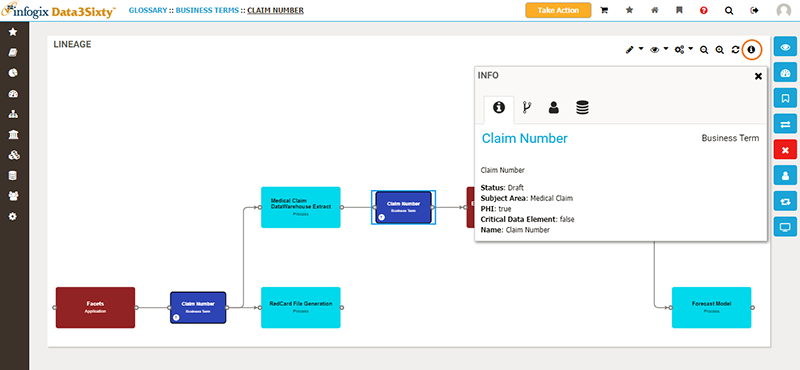
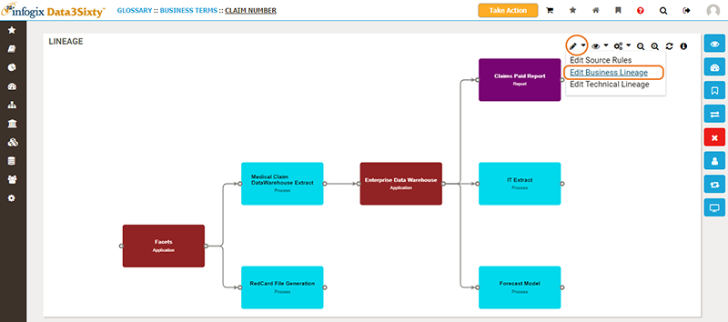

The Lineage tool in Infogix Data3Sixty enables you to track the lifecycle of an artifact and provides an overview of the relationship between various objects stored in the system.
Lineage can be very different depending on the target audience. Technical lineage tends to be very granular, expansive and data storage centric, whereas business lineage tends to be more abstract and typically focused on one resource such as a report, business term or policy.
When you are viewing an artifact such as a Business Term or a Report, you can view the lineage of that item by clicking the Lineage button on the right side of the screen:
Clicking the lineage button displays a flow diagram illustrating the journey of the selected item, from the time the artifact originated through to the systems that store it. The lineage diagram provides you with the context that you need to understand the structure and location of the artifact within the wider data model:
At any point through the flow, you can double-click an item to focus the diagram on the selected step.
To gain an insight into definitions, ownership and technical details, select an item then click the Information button in the top right corner of the Lineage screen:

If you have the required permissions, you can add, edit or delete business lineage in the visualization view for a specific artifact.

For more information on populating each of the lineage fields, see Bulk loading.
See also: